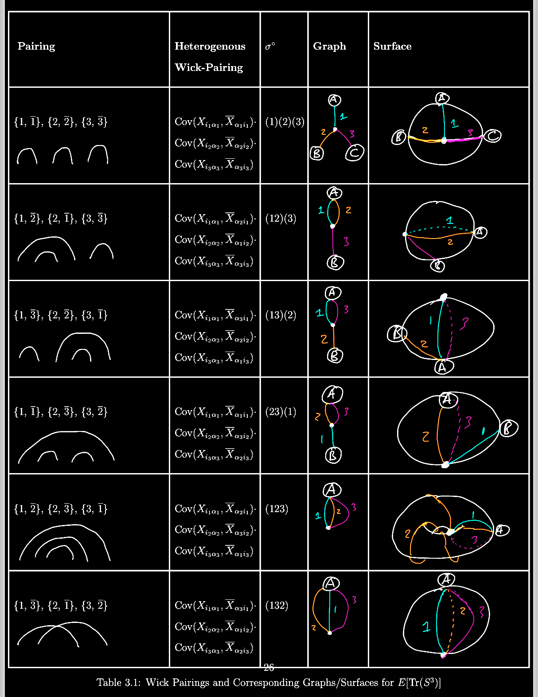
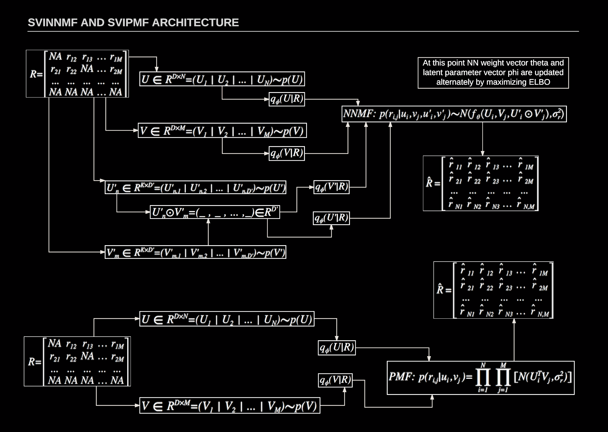
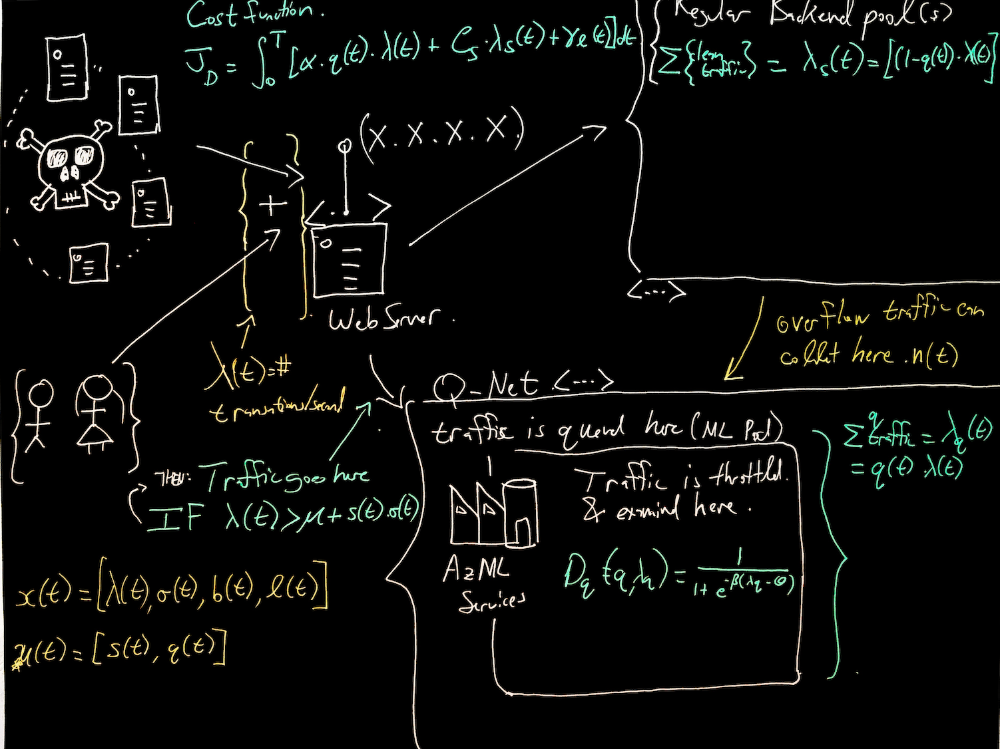
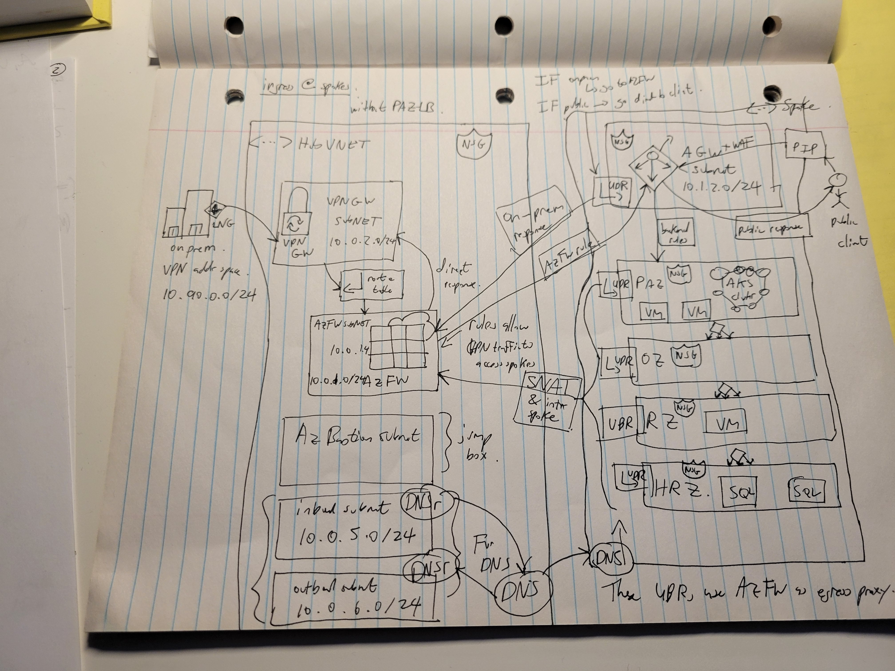
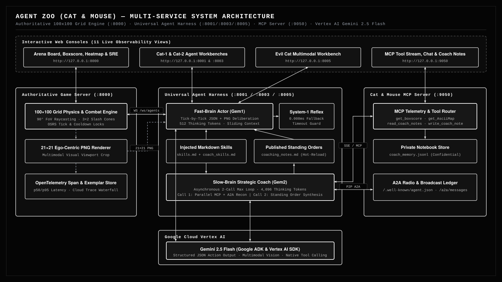
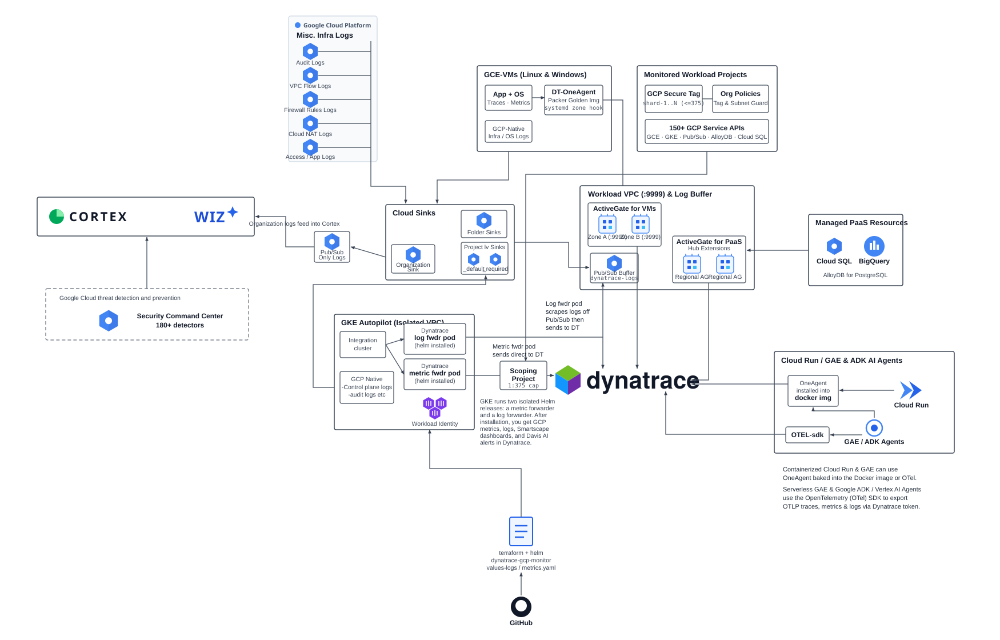

Hi, I’m Shane.
I'm an Engineering consultant and this site showcases some of my work and ideas.
Featured Work

Analytical and computational investigation into random matrix spectral distributions and combinatorial genus expansions from my M.Sc. mathematics thesis.

Combining variational matrix factorization with posterior uncertainty estimates to guide exploration-exploitation in bandit recommendation.

Dynamical game-theoretic cost modeling and network simulation for automated quarantining under distributed denial-of-service attacks.

Hub-and-spoke cloud landing zone topology with identity segmentation, firewall egress routing, and NSG hardening.

Distributed 5-service cognitive laboratory testing whether frontier LLMs can invent spatial search geometry, coaching doctrines, and game-theoretic alliances.

Multi-level architecture collecting Logs, Metrics, and Traces across a GCP Organization via Folder Log Sinks, sharded Scoping Projects (1:375), ActiveGate clusters, OneAgent Golden Images, and OTel SDK.
Selected Work
All Projects (10) →- 01 Wishart Ensemble Spectral Density & Combinatorial Maps Random Matrix Theory →
- 02 Bayesian Neural Networks in the Bandit Framework Probabilistic ML →
- 03 Quarantine Network Dynamics in DDoS Attacks Dynamical Game Theory →
- 04 Secured Landing Zone & Hub-Spoke Network Hardening Cloud Architecture →
- 05 Agent Zoo: Autonomous Multi-Agent Spatial & Deception Lab Multi-Agent AI ↗
- 06 Dynatrace + GCP: Enterprise Full-Stack Observability Architecture Cloud Observability ↗